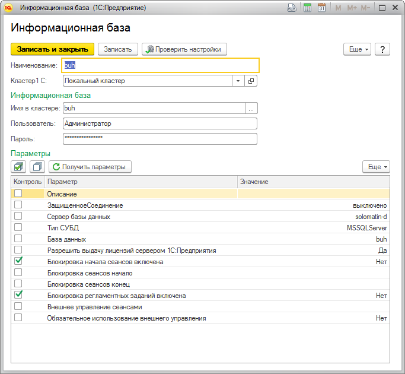

Данная форма позволит вам заполнить настройки информационной базы, а так же параметры, значения которых необходимо контролировать.

В данном случае, если настройка "Блокировка начала сеансов включена" или "Блокировка регламентных заданий включена" данной информационной базы, полученная при мониторинге кластера будет отличаться от указанного значения, то будет создан инцидент с уровнем "Предупреждение". При возвращении значения к эталонному инцидент автоматически будет закрыт.